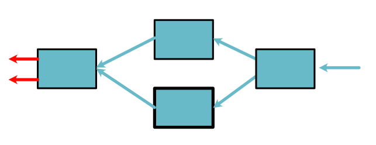
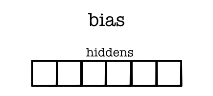
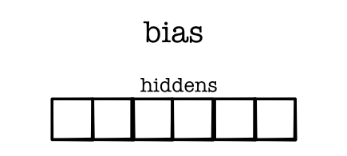

Machine Learning Engineering
Lecture 9
Neural Networks
Lecture
Outline
Review: Backpropagation
Neural Networks
Model Training
Backpropagation
Math View

Code View
def h(x, y):
z = x * y
return z.log() + z.exp()
x = minitorch.Scalar(5.)
y = minitorch.Scalar(3.)
h(x, y).backward(1)
print(x.derivative)Terminology
Leaf: Variable created from scratch
Non-Leaf: Variable created with a Function
Constant: Term passed in that is not a variable
Method
Graph propagation on Variables
Breadth-first search i.e. Queue
Ensure flow to original Variables
Algorithm
Start with final Variable / derivative (\(d_{out}\))
if Variable is a leaf, add derivative to .derivative
if Variable is not a leaf,
Apply chainrule with \(d_{out}\)
Add non-constant Variables to queue
Example
Red -> Pending Variables / derivatives (\(d_{out}\))

Example

Example

Example

Example
Example

Caveats
Simple implementation
Many optimizations, alternatives
Works for most NNs
Lecture Quiz
Neural Networks
Reminder
Dataset - Data to fit
Model - Shape of fit
Loss - Goodness of fit
Linear Model Example
Parameters
 

{kind=link}
Loss Function

Example Dataset

Harder Datasets
Model may be too "weak"

Neural Networks
New model
Uses repeated linear splits of data
Produces non-linear separators
Loss will not change
Intuition: Neural Networks
Apply many linear seperators
Reshape the data space based on results
Apply a linear model on new space
Starting Point
Intuition: Split 1

Intuition: Split 2

Reshape: ReLU
{kind=link}
Key: Non-linear function
Split 1

Split 2
Final Layer

Final Layer
Zoomed Out
{kind=link}
Math View
- Parameters:
\(w_1, w_2, w^0_1, w^0_2, w^1_1, w^1_2, b, b^0, b^1\)
Math View (Alt)
- Parameters:
\(w_1, w_2, w^0_1, w^0_2, w^1_1, w^1_2, b, b^0, b^1\)
Code View
Linear
class Linear(minitorch.Module):
def __init__(self):
super().__init__()
self.w_1 = minitorch.Parameter(minitorch.Scalar())
self.w_2 = minitorch.Parameter(minitorch.Scalar())
self.b = minitorch.Parameter(minitorch.Scalar())
def forward(self, inputs):
return (inputs[0] * self.w_1.value +
inputs[1] * self.w_2.value +
self.b.value)Code View
Model
class Network(minitorch.Module):
def __init__(self):
super().__init__()
self.unit1 = Linear()
self.unit2 = Linear()
self.unit3 = Linear()
def forward(self, x):
h_1 = self.unit1.foward(x).relu()
h_2 = self.unit2.foward(x).relu()
return self.unit3.foward([h_1, h_2])Training
model = Network()
...
model.named_parameters()All the parameters in model are leaf Variables
Computing backward on loss fills their derivative